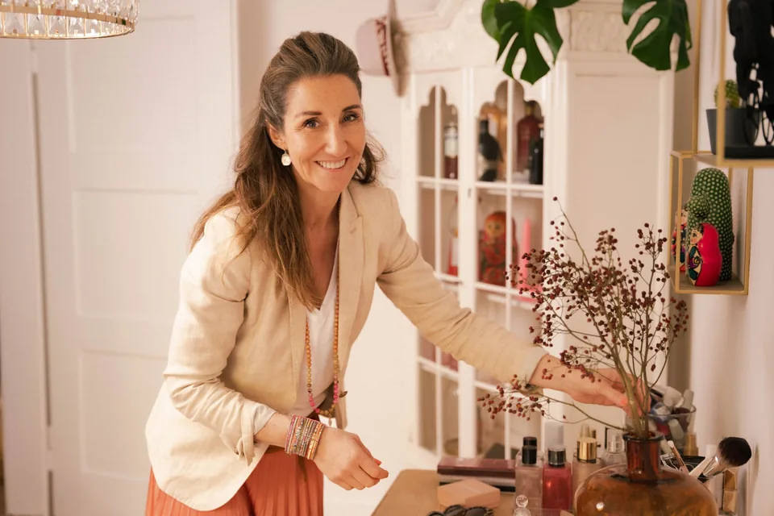

Gesamtkonzept
Kunde Suter, Kilchberg
Komplett neue Einrichtung: Möbel, Teppiche, Licht, Vorhänge, Bilder, Accessoires und saisonale Dekoration.
Alles passt genau so zusammen, wie ich mir das vorgestellt habe.
Philosophie
Egal ob ein Zimmer oder ein ganzes Haus - IKEA oder B&B Italia - bunt oder uni - modern, vintage, skandi, industrial oder irgendein anderer Style - Um- oder Neugestaltung - Umzug oder Neubau: Ich freue mich über jede Herausforderung.
Oft reicht schon ein 2-stündiger Beratungstermin, um ein Raumgefühl total ins Positive zu verwandeln. Es muss weder kompliziert noch teuer sein. Stil entsteht durch die Freude und Bereitschaft, Zeit in die Suche der passenden Möbel, Materialien und Accessoires zu investieren und diese farblich abgestimmt mit etwas Geschick und Erfahrung ins richtige Licht zu rücken.

Angebote
Gerne berate ich Sie sowohl privat als auch in Bezug auf Ihr Büro, Hotel, Restaurant oder Geschäft.
Referenzen
Ein paar verdichtete Einblicke aus echten Projekten. Auf der Referenzen-Seite finden Sie die ausführlichen Stimmen und Projektbilder.
Gesamtkonzept
Komplett neue Einrichtung: Möbel, Teppiche, Licht, Vorhänge, Bilder, Accessoires und saisonale Dekoration.
Alles passt genau so zusammen, wie ich mir das vorgestellt habe.
Farbberatung und Einzug
Farbkonzept, Parkettwahl, Umbauvorschläge, Möblierung, Dekoration und später Wintergarten und Outdoor-Möblierung.
Das erreichte Resultat überzeugt mich sehr und ich fühle mich rundum wohl.
Komplette Umgestaltung
Wohn-, Ess- und Schlafbereich mit neuen Möbeln, Lampen, Vorhängen, Teppich, Bildern, Deko und Shoppingtour.
Mit Power, Professionalität, Herzblut und Perfektion durfte ich miterleben, wie sich meine Wohnung in eine echte Wohlfühloase verwandelt hat.
Einblicke
Konkrete Transformationen aus echten Projekten sowie Presseartikel über stylisch. Auf der Referenzen-Seite finden Sie die ausführlichen Stimmen und Projektbilder.
Häufige Fragen
Wir klären vor Ort, was Sie verändern möchten, welche Möbel und Lieblingsstücke bleiben und welche Entscheidungen anstehen. Danach erhalten Sie konkrete Ideen, Prioritäten und nächste Schritte, die Sie direkt umsetzen können.
Die Soforthilfe startet ab CHF 280 und reicht oft für ein bis drei Räume. Bei grösseren Projekten richtet sich der Umfang nach Ihrer Situation, ich bespreche das transparent vorab.
Ja. Ich berate auch Büros, Restaurants, Hotels und andere Geschäftsräume, wenn Atmosphäre, Funktion und ein stimmiger erster Eindruck zusammenkommen sollen.
Nein. Ich arbeite unabhängig von Marken, Geschäften und Händlern. Empfehlungen sollen zu Ihnen, Ihrem Zuhause und Ihrem Budget passen, nicht zu einer Shopbindung.
Nein. Oft entsteht viel Wirkung durch bessere Anordnung, passende Farben, gezielte Ergänzungen und den Blick auf das, was bereits da ist.
Das hängt von Umfang und aktueller Auslastung ab. Schreiben Sie mir am besten kurz per WhatsApp, dann kann ich schnell einschätzen, was möglich ist.
Yes. English speaking clients are welcome too. We can discuss your home, office or project in English.
Nächster Schritt
Schreiben Sie mir kurz per WhatsApp, worum es geht. Gemeinsam klären wir schnell, welche Art von Beratung passt.